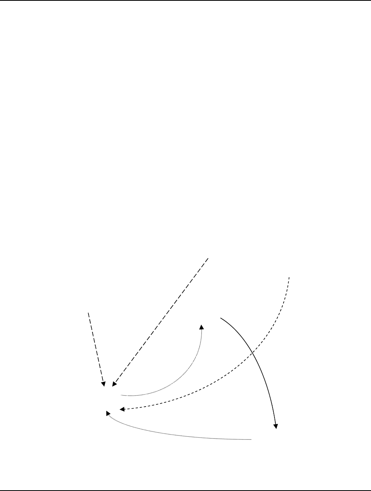

Page 21
Academy of Strategic Management Journal, Volume 12, Number 1, 2013
DEVELOPING EXPERTISE IN MANAGEMENT
DECISION-MAKING
Carter L. Franklin, II, DeVry University
ABSTRACT
Experts and novices approach decisions in remarkably different ways. The quality of
decision-making by a novice largely depends on the ability to conduct a rational analysis of the
decision situation. An expert makes use of a highly developed model of the decision situation
and the decision is not the result of the "rational" process. We begin with a critical evaluation of
the commonly accepted definition of the rational decision-making process. This leads to a
revision with systemic, iterative, and adaptive properties. A description of decision situations
with reference to their appropriateness for the application of expertise is the basis of an
understanding of the domain in which expertise may be developed. Next, we present the process
for the development of expertise. The rational process, as revised, is the foundation for the
development. The attributes of expertise developed as described closely match characteristics of
expertise described in the research and application literature.
INTRODUCTION
The need for effective decision-making and high quality decisions is common to many
fields. The requirement is particularly acute in business where the quality of management
decision-making directly affects the performance of the enterprise and how well it meets its
objectives. Expertise in decision-making is an essential skill for a manager and an understanding
of the acquisition of expertise is necessary to its development.
Two elements are necessary to the development of expertise in management decision:
one is experience and the other is a model or schema that relates experience to the reality of the
organization and its environment. Expertise in other areas, e.g., surgery, playing a musical
instrument, driving a racecar, typically involves coordinating mental processes with physical
ones. While physical attributes are largely irrelevant to the development and exercise of
managerial expertise, the process of developing managerial expertise nevertheless has many
elements in common with the general process for developing and applying expertise.
The point of departure for a discussion of expertise in decision-making is the decision
process known as the "classical" or "rational" process. Following a brief review of this process,
we suggest a revision that addresses several of its shortcomings. We next turn our attention to
expertise, particularly as applied to management decisions. This development begins with
schema of decision types that reveals where expertise may be applied. We note that some

Page 22
Academy of Strategic Management Journal, Volume 12, Number 1, 2013
decisions are best made using a (revised) rational process and others using expertise. Finally, we
illustrate how the rational process is the basis for developing expertise in management decision
making.
RATIONAL DECISION-MAKING
The apparent variety and complexity of management decisions motivates the use of a
classification scheme to bring order to a discussion of decision-making. Classes include
decisions under certainty, risk, and uncertainty; single and multistage decisions; group or
individual decisions; decisions with monetary or non-monetary objectives; and so forth.
Independent of classification, the decision-making literature consistently presents a
"rational" process for decision analysis generally involving five steps. This process is:
9 First: recognize and define the decision situation
9 Second: Identify alternatives
9 Third: Evaluate alternatives
9 Fourth: Select the best alternative
9 Finally: Implement the chosen alternative
This particular statement is from a basic text in management (Griffin, 2008) and reflects
content from a specialized source on management decision-making (Harrison, 1999).
There are many variations on this basic theme, all with similar characteristics. A popular
definition (Bazerman, 2002) is illustrative. In outline, the process is:
1. Define the problem
2. Identify the criteria
3. Weigh the criteria
4. Generate alternatives
5. Rate each alternative on each criterion
6. Compute the optimal decision.
Other authors have presented additional variations from both the behavioral sciences and
the quantitative disciplines. These are notable more for their similarities than their differences.
Harrison summarizes them succinctly (1999, p. 37-38):
There are various views on the process of decision making. Simon (1960) assigns three
major elements to the process (1) finding occasions for making a decision; (2) finding possible
courses of action; and (3) choosing among courses of action. Witte (1972) advances the notion of
decision making as a total process involving discernable and separate activities: (1) information
gathering, (2) development of alternatives, (3) evaluation of alternatives, and (4) choices. The

Page 23
Academy of Strategic Management Journal, Volume 12, Number 1, 2013
process espoused by Schrenk (1969) focuses on three elements: (1) problem recognition, (2)
problem diagnosis, and (3) action selection. Janis (1968) envisions a decision-making process
with five stages: (1) recognition of a challenge, (2) acceptance of the challenge, (3) meeting the
challenge through a choice, (4) committing oneself to the choice, and (5) adherence to the choice.
Eilon (1979) advances a comprehensive process composed of eight stages, which begins with
information input and culminates in a choice. Mintzberg and his associates (1976) offer an
incredibly complex formal structure derived from twenty-five “unstructured” decision-making
processes that are then organized into a general model of interrelated strategic decision
processes. Fredrikson (1976) proposes a method for organizing noneconomic criteria in a
decision-making process that includes four stages: (1) developing a criteria set, (2) posing criteria
questions, (3) scaling the responses, and (4) choosing among alternatives. Nutt (1989) advances a
decision-making process made up of: (1) exploring possibilities, (2) assessing options, (3) testing
assumptions, and (4) learning.
The salient point is that the "rational" process does not vary with the characteristics of the
decision. Given the diversity of decisions and decision environments, it is an open question
whether a sequence of five steps, more or less, will be universally successful in addressing the
scope and variety of management decisions. We further observe that sequential processes, such
as described here, are characteristic of a mechanistic world view (Ackoff, 1981) and note that the
antecedents of "rational" decision analysis are the perfect information assumptions of
competitive market theory. This theory is the product of a mechanistic worldview.
BEYOND "RATIONAL"
The rational process described above (along with its several variants) is inappropriate as a
procedure for making decisions. In summary form, the assumptions that render it ineffective are:
a) The process is sequential; once a step is complete, it is not revisited.
b) The process is complete; all alternatives are identified.
c) The process is deterministic, in the sense that the decision-maker understands the
relation between alternatives and outcomes. The relation may involve
probabilities (risk) in which case the decision may involve an expected value.
d) Perfect information about outcomes, and their probabilities, for each alternative is
known.
e) There is unity of purpose. The analyst (decision-maker), if not an individual, is a
group of undifferentiated individuals with a unitary purpose
A superficial comparison of these attributes to the real-world management decision
environment reveals the assumptions as unrealistic. A decision process based on them will
necessarily be ineffective.

Page 24
Academy of Strategic Management Journal, Volume 12, Number 1, 2013
The nature and variety of management decisions renders the formulation of a completely
effective decision procedure problematic. However, an improvement on the existing rational
process is not difficult to conceive. There is a prima facie argument that a decision process with
the following characteristics will produce superior decisions.
a) Systemic
b) Iterative
c) Adaptive (to new information)
d) Self-correcting
e) Active (in seeking new information and innovative approaches)
The formulation of a revised process incorporating these characteristics involves
synthesizing several well known, but seemingly disparate, conceptual structures and research
results.
A SYSTEMIC APPROACH TO DECISION ANALYSIS
We propose a revision to the "rational" process that exhibits the above characteristics and
consists of seven elements: (1) Understanding the decision opportunity, (2) Formulating the
correct goals for the decision, (3) Identifying and involving the correct participants in the
decision, (4) Framing the decision correctly (including understanding relevant alternative
framings), (5) Generation of alternatives, (6) Choice: selecting an alternative and (7) Learning,
to improve future decision-making.
The star-shaped graphic of Figure 1 presents the relation among the elements in the
process. Characteristics of the process are:
a) Elements are systemically interactive. Each point of the star connects to all other
points, indicating the joint and reciprocal influence of all elements in the process.
b) The process is iterative. Consideration of any element of the decision may
prompt a re-evaluation of any other element to accommodate newly developed or
revealed information or perspectives.
c) The process concludes only when all issues related to the elements at the points of
the star are resolved. Selection of an alternative occurs only when the process is
stable: there is no revision to any element.
d) The process accommodates a broad range of perspectives and approaches.
Multiple framings of the decision situation are required.
e) The process facilitates the development of expertise, in situations expected to
recur. Conducted properly, the process will reveal the crucial relations extant in
the decision situation.
Page 25
Academy of Strategic Management Journal, Volume 12, Number 1, 2013
f) The process encourages post hoc analysis as the basis for individual, and
organizational, learning. Statements of expected outcome statements are an
essential part of formulating alternatives.
Each of the elements of the decision (points of the star) makes a distinct contribution to
the decision. Each element controls, and is controlled by, each other element. As noted, choice
occurs only after all interactions are fully developed and all implications assessed.
Choice is the disjoint step marking the end of the process. Competing alternatives
typically reflect different framings of the decision situation, different goals, and perhaps,
different motives of participants. In most situations, the choice is from among competing
framings of the situation rather than competing alternatives developed from the same frame.
Figure 1: Decision Star
Opportunity
Goals Participants
Choice
Frame Alternatives
Learning
ELEMENTS OF THE STAR
The analysis process represented by the Star contains elements well documented in the
literature on decision-making. A brief review follows.

Page 26
Academy of Strategic Management Journal, Volume 12, Number 1, 2013
Opportunity for a decision typically arises from a Gap Analysis which identifies a "gap"
between the present state and the desired state. Huitt (1992) cites Arnold (1978) in identifying
four types of gaps:
1) something is wrong and needs to be corrected;
2) something is threatening and needs to be prevented;
3) something is inviting and needs to be accepted; and
4) something is missing and needs to be provided.
Tunnel vision (stating the problem too narrowly) represents the major difficulty in
problem identification as it leads to artificially restricting the search for alternatives.
SWOT (Strengths, Weaknesses, Opportunities, and Threats) analysis identifies strategic
decision opportunities. The “O” and “T” in SWOT usually involves one of the four types of
gaps noted above. Harrison (1999) describes a procedure for identifying strategic gaps.
Goals reflect organization mission and strategy. The goals for a specific decision involve
interpretation of mission and strategy as applied to the decision environment. Different
interpretations (which easily arise from different framings) can easily lead to conflicting goals or
a lack of goal clarity. Both Drucker (1973) and Ackoff (1981) describe how suboptimization can
easily lead to conflicting objectives. Individual psychology can be the source of different
perspectives on goals. It is widely acknowledged (Myers, 1988) that individuals with a task
orientation will view goals differently than those with a people orientation.
Who Participates in the decision is a consideration overlooked by many researchers. The
notion of the decision-maker as an individual actor is deeply rooted in the assumptions of the
perfectly competitive economic model. The organization in the 21
st
century has moved far
beyond the simplifying assumptions appropriate during the Industrial Revolution (see Ackoff,
1981 for elaboration). From a different perspective, Vroom & Jago (1988) use characteristics of
the decision to determine who should participate in the decision process. March (1994)
addresses decisions with multiple actors who may have inconsistent preferences or identities.
How the decision is Framed is crucial to the decision process. "Frames are mental
structures that simplify and guide our understanding of a complex reality." Russo & Shoemaker
(2002). They argue coherently that the quality of the eventual decision depends significantly on
how the situation is framed. Poorly framed decisions will be poor quality decisions. Proper
framing is a necessary attribute of a good decision and aggressive efforts to identify many
framing alternatives for the problem are required.
The variety of potential frames is extensive. Included are: (1) the functional perspective
(Finance, Operations, Marketing, etc.), (2) the ethical perspective, (3) the “green” perspective,
(4) the cross-cultural perspective, (5) the quantitative perspective (can we formulate the decision
in an optimization model?), and so forth. Frames are not exclusive and the eventual best

Page 27
Academy of Strategic Management Journal, Volume 12, Number 1, 2013
perspective on a decision may well be the result of a combination of frames. Undoubtedly,
“frame blindness” (Russo, 2002) is a serious impediment to quality decisions. The most notable
argument for multiple frames is the famous quote by Alfred P. Sloan, Jr. (in Drucker, 1973):
“'Gentlemen, I take it we are all in complete agreement on the decision here.' Everyone around
the table nodded assent. Sloan continued. 'Then, I propose we postpone further discussion of
this matter until our next meeting to give ourselves time to develop disagreement and perhaps
gain some understanding of what the decision is all about.'”
The importance of framing to both problem solving and decision-making is apparent in
the popular and highly regarded Ackoff's Fables (Ackoff, 1978). The insight provided by each
fable is nearly always based on a framing of the situation different from the one expected. The
multidisciplinary (or interdisciplinary) approach recommended in Management Science and
other fields acknowledges the value of different perspectives (leading to different framings) in
both problem solving and decision-making.
How individuals frame decision situations reflects the paradigm they find most effective
as a guide to understanding the environment. The German Weltanschauung describes the
concept.
Alternatives are the product of problem solving activity. Each framing of the decision
situation presents a problem and the solution to the problem (there may be more than one)
represents an alternative for the decision. It is, of course, necessary that the alternative include a
statement of the expected effect of its adoption. The linkage is direct: from frame to solved
problem to decision (action) alternative to expected outcome.
Choice (actually making the decision) may, in view of the foregoing, be construed as
selecting the frame and outcome that best serve organizational objectives. The decision-
maker(s) must determine which framing of the decision best represents the true environment and
which alternative (for the selected frame) presents the most desirable outcome. Stated thus, the
choice would appear perfunctory. However, the perceptive decision maker(s) recognizes that
there may be uncertainty about (1) which frame is most appropriate, (2) the linkage between
proposed action and projected outcomes, and (3) the desirability of the outcome in a future
environment.
Learning is a post hoc activity, based on a comparison of projected outcome with reality
as it occurs. Senge (1990) discusses this process in some detail from the organizational
perspective. We will return to this topic later as we discuss the process for developing expertise.
SYSTEMIC INTERACTIONS
The idea of recursion in decision-making is not new. Harris (1998) describes a recursion
between criteria and alternatives. The process presented here extends recursion to all points of
the Decision Star. In the following paragraphs, we discuss the analysis process as a systemic
interaction of processes.

Page 28
Academy of Strategic Management Journal, Volume 12, Number 1, 2013
The decision analysis begins with recognition of an opportunity for a decision.
Typically, a complete understanding of the decision will not be present from the outset. This is
particularly true for a new or unique decision. Further, an alternative may present along with the
opportunity, but it is generally wise to avoid an immediate decision, especially if circumstances
suggest the decision is an important one. The initial action of the decision-maker is to describe
the opportunity, define the specific goals for the decision and articulate the frame as completely
as possible. The next step is to validate the opportunity, goals, and frame.
Opportunity validation most conveniently involves evaluation by another individual with
a presumed interest in the decision. In the ideal case, this individual will frame the decision
differently or, perhaps, have a different perspective on the goals for the decision. It is well
established (Connolly, 2000) that multidisciplinary teams make superior decisions to those made
by individuals or groups with a single, or narrow, vision.
The participants in the decision drive the process. Alternative frames, goal clarity, and
viable alternatives all require participants with varied perspectives and commitment to the best
possible decision.
The Star graphic with direct links connecting Opportunity, Goals, Participants, and Frame
illustrates the systemic interaction of these elements of the decision. Each participant will
contribute a (potentially conflicting) perspective on these elements. A systemic, iterative process
with the objective of resolving conflicts and producing a completely articulated statement of
alternative frames and associated action alternatives is essential to achieving the best possible
decision.
As the process proceeds, each element potentially prompts a revision to other elements.
Thus, a new frame will require a revision to the goal statement, and possibly a fuller
understanding of the opportunity. A new participant will contribute a new perspective on goals
(possibly based on the perspective of a different part of the organization), potentially prompting
a revised perception of the opportunity.
The iterative process concludes with the definition of several alternative frames for the
decision with corresponding action alternatives. including expected outcomes. The process
should continue until:
a) Alternative frames are fully developed,
b) Goal clarity, for each frame, is achieved,
c) The opportunity is validated for each frame,
d) Participants are satisfied that no additional participants will contribute new
perspectives (i.e., that additional frames are unlikely),
e) There is complete articulation of action alternatives corresponding to each frame,
including statements of expected outcomes.

Page 29
Academy of Strategic Management Journal, Volume 12, Number 1, 2013
Observe that the adoption of a ‘frame centric’ representation of the conclusion of the
process involves associating different characterizations of opportunity, goals, and actions with
alternative framings of the decision. Other representations are, of course, possible but they lack
the scope of the frame-based process.
The analysis process concludes with the choice of an alternative. Once the choice is
made, the analysis is concluded and the attention of decision-makers is turned to implementation
and to anticipation of the next opportunity.
CATEGORIES OF MANAGEMENT DECISIONS
The discussion thus far has been general, independent of the characteristics of any
particular decision or environment. How decisions should be (and are) made do depend on the
nature and circumstances of the decision. We now undertake a consideration of how decisions
vary and how the decision process must reflect the variation.
The most basic classification scheme divides decisions into two major categories: routine
and non-routine decisions (Drucker, 1967 or Harrison, 1999). The recurring/non-recurring
characterization is also used. This scheme is significant since it is typically determines (1) which
decisions must be subject to study and analysis, and (2) which decisions may be made using
rules and models to guide the decision maker.
The accomplished manager obtains high quality decisions in both routine and non-routine
contexts. Sometimes the manager makes the decision; sometimes others make the decision
under the direction of the manager. As noted earlier, the Vroom & Jago (1988) model indicates
which is most appropriate.
The routine/non-routine characterization of decisions is a useful starting point. Non-
routine decisions do not provide a good domain for the application of expertise because they do
not recur and acquisition of experience, necessary to expertise, is not possible. Non-routine
decisions require analysis if a high quality result is required.
Routine decisions do recur and permit the development of expertise. In some cases, the
application of expertise can be routinized (or programmed), as in the case of specifying stocking
levels in an inventory system. In other cases, the attention of the manager is required in every
occurrence.
Routine decisions have characteristics that remain largely the same from one occurrence
to another. This attribute allows organizations to gain experience in making these decisions and
to develop expertise in making them to pursue organizational objectives. Harrison (1999, p. 21)
characterizes the structure of routine decisions as
Procedural; predictable; certainty regarding cause/effect relationships; recurring;
within existing technologies; well defined information channels; definite decision criteria;
outcome preferences may be certain or uncertain.

Page 30
Academy of Strategic Management Journal, Volume 12, Number 1, 2013
Non-routine decisions, again from Harrison, are
Novel; unstructured, consequential, elusive and complex; uncertain cause/effect
relationships; nonrecurring; information channels undefined’ incomplete information; decision
criteria may be unknown; outcome preferences may be certain or uncertain
Routine decisions are often part of a smooth flow of events and may be difficult to
identify. Non-routine decisions are, by their nature, more easily identified.
Drucker (1967) described a four-category structure for management decisions and used
the terms “generic” and “exceptional” for routine and non-routine decisions:
1. Truly generic events. Here, the occurrence of the decision situation is only a
symptom that requires an adaptation of an existing procedure. Drucker cites
inventory decisions as illustrative of this class.
2. The apparent exceptional event which appears unique (and may be unique for a
particular organization), but which occurs commonly elsewhere. A merger or
acquisition decision is illustrative of this class.
3. Truly exceptional events. These decision situations have not occurred before and
are unlikely to occur again. The correct response to the development (by a
competitor) of a substitute for a major product would fall into this class.
4. Exceptional events that are a first/early occurrence of a new generic category.
Internet based attacks on a company’s database or other internet-based attacks
illustrate this class.
Of these categories, numbers 1, 2, and 4 provide opportunity for developing expertise,
although number 2 requires a broader purview than the single organization. Expertise in this
category generally occurs in consulting firms and in corporate (as contrasted to business)
strategy functions. Categories 1 and 4 provide significant opportunities for developing expertise.
Category 1 requires further attention. While this category includes many programmable
decisions, there are also many not capable of being programmed. Several factors contribute to
rendering a recurring decision un-programmable. Some of these are:
a) The decision environment is dynamic or unstable
b) The decision environment cannot be described abstractly or symbolically due to
discontinuities, un-measurable variables (these may be psychological or
behavioral), unknown causal relations, lack of complete understanding of the
relation between alternatives and outcomes
Page 31
Academy of Strategic Management Journal, Volume 12, Number 1, 2013
c) Computational complexity. In spite of exponentially increasing capabilities of
computer-based systems, many problems remain intractably large, particularly
when required decision intervals are short.
d) Goals are ill defined and, possibly, shifting.
We assert, but cannot demonstrate, that the majority of management decisions fall in to
the non-programmable area of category 1.
The opportunities for developing expertise thus lie in this non-programmable area of
category 1 and in category 4.
Klein (1999) offers a contrasting perspective on the use and development of expertise in
decision-making. Decisions in Drucker's category 1 may be made either by an expert or, if
certain conditions obtain, using the rational procedure. Drucker's categories 3 and 4 require the
rational procedure (or an equivalent technique) since there is no basis for developed expertise.
Decisions using expertise (Recognition Primed Decisions, or RPD, in Klein's terms) are
appropriate under the conditions described in Table 1.
Table 1: Classification Scheme for Decision Making Procedure
Decision Characteristic
Recognition Primed
Decisions (RPD)
“Rational” Choice
(Comparative analysis)
Greater time pressure More likely
Higher experience (expertise) level More likely
Dynamic conditions More likely
Ill-defined goals More likely
Need for Justification More likely
Conflict resolution More likely
Optimization desirable More likely
Greater computational complexity More likely
Group decision necessary More likely
Inadequate levels of experience (expertise) More likely
Adapted from Klein (1999), p. 95
We further note that decisions involving "rational choice" often involve a group process,
while an individual (the expert") typically makes "RPD decisions."
The foregoing makes clear that expertise is appropriate in some decision situations and
not in others. Heerken (2011) demonstrates the difficulties encountered in attempting to apply
expertise in non-routine situations. Where expertise is not available or not appropriate, decision-
makers employ the rational process for the decision. Our interest is in the development of
expertise and we argue that rational choice processes are at the core of the development of
expertise

Page 32
Academy of Strategic Management Journal, Volume 12, Number 1, 2013
DEVELOPING EXPERTISE
The rational choice process, as described by the Decision Star, is effective for Drucker
categories 3 and 4: the decision is truly unique or is a first/early occurrence of a new category.
Opportunities for developing expertise thus arise from category 4 and those decisions in category
1 (generic events) not capable of being programmed.
In decision circumstances requiring rational choice, the focus of the decision-maker is on
making the right decision. It is not on developing expertise in making the type of decision
represented by the situation at hand because the decision is not expected to recur. The non-
expert makes the decision, and moves on to other pursuits. The developing expert follows a
different path.
The attention of the developing expert is on ways to structure the decision situation to
gain insight into the relation between characteristics of the situation and good decisions. We see
here the difference between analysis for decision-making and analysis for developing expertise.
For decision-making, analysis is about the circumstances of the decision that presents and the
effectiveness of the resulting decision. The developing expert looks beyond the present
circumstances with the objective of developing a model or schema for describing the salient
features of the situation.
At its core, expertise involves structuring knowledge and information about decision
situations so that the structure leads to high quality decisions. To develop expertise, one must
begin with a model or schema and then incrementally refine it.
The development of expertise is a dynamic process. Experts continually refine their
expertise and adapt it to new circumstances and changing conditions. The renowned
psychologist Samuel Messick (1988) described characteristics of expertise.
It also appears that experts, in contrast to novices, not only have a vastly richer store of
relevant knowledge accessible in memory but also structure and continually restructure
knowledge in more complex ways. In particular, experts construct complex schemas or mental
models that combine some of the dimensions and simpler schemas used by novices into integrated
functional patterns, while at the same time discarding as redundant or irrelevant some other
dimensions that novices attend to. Thus, experts develop mental models representing new and
adroitly usable patterns of perceiving, thinking, and acting that direct, organize, and control both
the acquisition of new knowledge and the processing of information in the course of problem
solving.
We now understand that the model or schema is the starting point for the development of
expertise. Expertise begins with a starting point model and that model is refined with each
successive occurrence of the decision.

Page 33
Academy of Strategic Management Journal, Volume 12, Number 1, 2013
CREATING THE EXPERT'S MODEL
The Decision Star of Figure 1 is the starting point for the expert's model. The Process
itself will develop from the Frame for the decision. The Frame of the decision-maker will
contain information relevant to the present decision and the Frame for the developing expert will
contain information relevant to the category of decisions represented by the present instance.
Both the decision-maker(s) and the developing expert will use the Frame as the focal point for
organizing their understanding of the Opportunity for the decision, the Goals to be served by the
decision, the perspectives (including alternative Frames) offered by other Participants in the
decision, and nature of the Alternatives for the decision.
The developing expert employs the structure of the Decision Star to develop the "mental
model" for the decision situation. This is a different use than that of the decision-maker. The
decision maker is addressing a (Drucker) type 3 or 4 decision. In this case, the Frame for the
decision-maker is a 'single use' construct while the Frame for the developing expert is
constructed as the foundation for expertise. These are very different uses. The developing
expert is keenly interested in how the proper Frame for the decision changes in response to
different interpretations of Goals, or different perspectives on the Opportunity for decision.
Figure 2: Expert Process
Opportunity
Mentor/Coach/Guide
Goals
Choice
Model
(Frame)
Learning
Page 34
Academy of Strategic Management Journal, Volume 12, Number 1, 2013
After several experiences with the decision, the developing expert evolves a unique and
personal model for the decision. Achieving experience with the decision, the expert will attend
less and less to inputs from other (potential) participants, and more to variations in goals or
opportunity, particularly as they affect the model or frame of the situation.
The expert "analysis" becomes a reduced version of the Decision Star, one that represents
the evolutionary development of expertise. Figure 2 suggests the nature of this process.
The evolution from the star to the expert process involves several steps. These are not
sequential or even necessarily disjoint.
a) The number of participants diminishes until only the developing expert remains.
Participants are useful for contributions to initial framing and formulation of
alternatives but once the frame is developed, they add no further value and may
easily become a distraction. The developing expert typically seeks out a coach or
guide for the development process. This coach structures and manages the
deliberate practice (Anders, 1993, 2006, Colvin, 2008) necessary to the
development of expertise. Leonard and Swap (2008) describe a structure for
deliberate practice (which they call 'Guided Experience') designed for use in a
managerial environment.
b) Alternatives relate to frames. As the frame used by the developing expert
evolves, single alternatives become associated with variations in opportunities as
perceived. The more highly developed the expertise becomes; the less likely it is
that multiple alternatives will be considered for a single decision. The
characteristic of the expert decision is that just the right decision is produced, one
that matches the nuances of the opportunity.
c) Choice vanishes altogether. Using the frame, the expert relates the characteristics
of the opportunity to a single alternative for the decision: there is no need for
choice. Where the novice may see several possible choices for a given decision
opportunity, the expert sees only one: the one calibrated to best address the
opportunity.
d) Goals may vary, depending on the circumstances surrounding the opportunity and
general organizational considerations. The expert recognizes the salient
characteristics of the opportunity and adapts the response so that appropriate goals
are met
e) As indicated above, the expert attends to Opportunities and Goals and whether
variations indicate the need for an adaptation of the Frame for the decision. If
not, the expert decision is reasonably direct, assuming the characteristics of a
RPD (Recognition Primed Decision) as described by Klein (1999).

Page 35
Academy of Strategic Management Journal, Volume 12, Number 1, 2013
The object of learning is the frame. The standard for evaluation of the outcomes is
whether the frame properly represented the situation and whether the alternative was the most
effective one possible under the circumstances. A positive answer further validates the frame
and a negative one prompts modification of the frame to account for circumstances not properly
accommodated.
Following this developmental sequence, we observe that the Decision Star is the starting
point for the development of expertise in management decision-making. This construct, as an
evolutionary restatement of the "rational" decision process, is used to address both routine and
non-routine decisions.
COMMENTARY
Existing models for analysis of management decisions are deeply rooted in concepts of
organization and the management process that exhibit the philosophy and assumptions of the 19
th
century. Organizations, and management, in the 21
st
century exhibit radical differences in
comparison to 19
th
century models. One of the primary areas of contrast is decision-making
within the organization. The presentation here pursues the goal of showing how analysis must
change and, in fact, is changing to reflect new organizational models and management processes.
Gary Hamel (quoted in Barsh, 2008) puts it thus:
The outlines of the 21st-century management model are already clear. Decision-making
will be more peer based; the tools of creativity will be widely distributed in organizations. Ideas
will compete on an equal footing. Strategies will be built from the bottom up. Power will be a
function of competence rather than of position. In terms of the future of management, we’re at the
beginning of what will be a fairly long journey. You can see some of the pieces starting to come
together, but we’re not there yet.
There is little doubt that a linear and sequential analytic process is inappropriate to the
function of both manager and organization in the 21
st
century. Systemic, iterative processes have
been evident in organization for some time and an objective presentation of the nature of these
systemic processes is long overdue.
REFERENCES
Ackoff, R.L., The Art of Problem Solving. New York: John Wiley & Sons, 1978. ISBN 0-471-04289-7
Ackoff, R.L., Creating the Corporate Future, New York: John Wiley & Sons, 1981. ISBN 0-471-09009-3
Arnold, J. (1978). The seven building blocks to better decisions. New York: AMACON.
Barsh, Joanna, “Innovative management: A conversation with Gary Hamel and Lowell Bryan” McKinsey Quarterly,
2008, no.1 http://www.mckinseyquarterly.com/Innovative_management_A_conversation_between_Gary
Hamel_and_Lowell_Bryan_2065 Accessed 7/12/2011

Page 36
Academy of Strategic Management Journal, Volume 12, Number 1, 2013
Bazerman, Max H., Judgment in Managerial Decision Making, 5
th
ed., New York: John Wiley & Sons, 2002. ISBN
0-471-39887-X.
Bedard, J. and Chi, M. T. H. (1993). "Expertise" Current Directions in Psychological Science, 1 (4), 135-139
Bonini, C.P. Simulation of Information and Decision Systems in the Firm. Englewood Cliffs, N.J.: Prentice-Hall,
Inc., 1963.
Chi, M. H., Glaser, R., & Farr, M. J. (1988). The Nature of Expertise. Hillsdale, NJ: Erlbaum.
Clarkson, G.P.E., Portfolio Selection: A Simulation of Trust Investment. Englewood-Cliffs, NJ” Prentice-Hall,
1962.
Colvin, Geoff, Talent is Overrated. New York: Portfolio, the Penguin Group. 2008. ISBN 978-1-59184-224-8
Connolly, T., Arkes, H.R., & Hammond, K.R., Judgment and Decision Making. Cambridge, UK: Cambridge
University Press, 2000. ISBN 0-521-62355-3
Cyert, R. M. & March J. G., A Behavioral Theory of the Firm. Malden, MA: Blackwell Publishers Inc., 1963. ISBN
0-631-17451-6.
Drucker, Peter F., Management: Tasks, Responsibilities, Practices. New York: Harper & Row, 1973. ISBN 0-06-
0110992-9.
Drucker, Peter F., “The Effective Decision,” Harvard Business Review January-February, 1967
Eilon, Samuel, Management Control, 2
nd
ed. New York: Pergamon, 1979.
Ericsson, K. Anders, Krampe, Ralf T., Tesch-Römer, Clemens, "The role of deliberate practice in the acquisition of
expert performance." Psychological Review, Vol 100(3), Jul 1993, 363-406.
Ericsson, K. A., Charness, N., Hoffman, R. R., Feltovich, P. J., The Cambridge Handbook of Expertise and Expert
Performance. New York: Cambridge University Press, 2006. ISBN 978-0-521-84097-2.
Fayol, H. General and Industrial Management, Sir Isaac Pitman & Sons Ltd., London, 1949. (translation by
Constance Storrs of the 1916 Administration Industrielle et Generale)
Fells, Michael J., “Fayol Stands the Test of Time,” Journal of Management History 6(8), 2000, 345-60
Fredrikson, E.B., “Noneconomic Criteria and the Decision Process,” Decision Sciences, 2 (1971)
Gladwell, Malcolm, Outliers. New York: Little, Brown & Company. 2008. ISBN 978-0-316-01792-3
Griffin, R. W., Management. Boston, MA: Houghton-Mifflin Company, 9
th
ed., 2008. ISBN 978-0-618-76795-3.
Hamel, G., The Future of Management (with Bill Breen). Cambridge, MA: Harvard Business School Press, 2007.
ISBN 978-1422102503
Hans Heerkens, Christiaan Norde, Beatrice van der Heijden, (2011) "Importance assessment of decision attributes:
A qualitative study comparing experts and laypersons", Management Decision, Vol. 49 Iss: 5, pp.748 - 761
Harris, Robert, “Introduction to Decision Making” Virtual Salt, July 2, 1998.
http://www.virtualsalt.com/crebook5.htm, accessed 8/7/2011
Harrison, E. Frank, The Managerial Decision-Making Process. Boston, MA: Houghton-Mifflin Company, 5
th
ed.,
1999. ISBN 0-395-90821-3.
Huitt, W. (1992). Problem solving and decision making: Consideration of individual differences using the Myers-
Briggs Type Indicator. Journal of Psychological Type, 24, 33-44.
Janis, I.L., “Stages in the Decision-Making Process,” in Theories of Cognitive Consistency: A Sourcebook, ed.
Robert P. Abelson, et al. Chicago: Rand McNally, 1968, 577-588
Klein, Gary Sources of Power. Cambridge, MA: MIT Press, 1999. ISBN 0-262-61146-5
Leonard, D. and Swap, W., "Deep Smarts," Harvard Business Review. September, 2004. March, J. G., A Primer on
Decision Making, New York: The Free Press, 1994. ISBN 0-02-920035-0
Mayo, Elton, Hawthorne and the Western Electric Company, The Social Problems of an Industrial Civilisation,
London: Routledge, 1949.
McGregor, Douglas. The Human Side of Enterprise, New York; McGraw-Hill Companies, 2006 ISBN 0-07-
146222-8. First published, 1960.
Messick, S. “Testing for Success: Implications of New Developments in Measurement and Cognitive Science”

Page 37
Academy of Strategic Management Journal, Volume 12, Number 1, 2013
Selections: The Magazine of the Graduate Admissions Council. Volume V, Number 2. (Autumn, 1988) Los
Angeles, CA (11601 Wilshire Blvd. (90025). ISSN 0882-0228
Mintzberg, H., Raisinghani, D., & Theoret, A., “The Structure of Unstructured Decision Processes,” Administrative
Science Quarterly, 21 June, 1976.
Myers, Isabel Briggs, Introduction to Type. Palo Alto, CA: Consulting Psychologists Press, Inc., 1988
Nutt, P.C., Making Tough Decisions San Francisco: Jossey-Bass, 1989.
Render, B., Stair, R.M., & Hannah, M.E., Quantitative Analysis for Management 10ed. Englewood Cliffs, N.J.:
Prentice-Hall, Inc., 2009. ISBN 978-0-13-603625-8
Russo J. Edward and Schoemaker, Paul J.H., Winning Decisions. New York: A Currency Book (Doubleday), 2002.
ISBN 0-385-50225-7
Schrenk, L.P., “Aiding the Decision-Maker – A Decision Process Model,” Ergonomics, 12 (July, 1969) 543-557.
Senge, Peter M., The Fifth Discipline. New York: Doubleday, 1990. ISBN 0-385-26094-6.
Simon, H. A., Administrative Behavior: A Study of Decision-Making Processes in Administrative Organizations.
New York: The Free Press, 1945
Simon, H.A., The New Science of management Decision. New York: Harper & Row, 1960.
Taylor, Frederick Winslow "The Principles of Scientific Management" Harper & Brothers, 1911.
Witte, Eberhard, “Field research on Complex Decision-Making Processes – The Phase Theorem,” International
Studies of Management and Organization (Summer, 1972), 156-182.
Vroom, V. & Jago, A.G. The New Leadership, Upper Saddle River, NJ: Prentice-Hall, 1988. ISBN 0-13-615030-6.

Reproduced with permission of the copyright owner. Further reproduction prohibited without
permission.